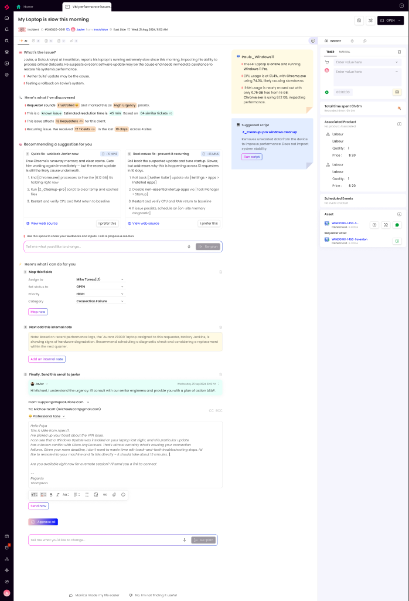

Breakdown of issues found across grammar, data consistency, UX, and missing states.
Text-level errors that degrade trust in an AI-powered product.
| # | Original | Problem | Suggested Fix | Type |
|---|---|---|---|---|
| 1 | "Map this fields" | Subject-verb disagreement. "this" (singular) + "fields" (plural). | "Map these fields" or "Map this field" | Grammar |
| 2 | "I will re propose a solution" | "re propose" is not standard English. Should be "repropose" (one word) or "re-propose" (hyphenated). | "I will repropose a solution" | Spelling |
| 3 | "share your feedbacks" | "Feedback" is uncountable in English — no plural "feedbacks". | "share your feedback" | Grammar |
| 4 | "Finally, Send this email" | Inconsistent sentence-case vs title-case. "Send" is capitalized mid-sentence. | "Finally, send this email" | Capitalization |
| 5 | "Next add this internal note" | Missing comma after "Next". Also title-case drift with "add" lowercase while "Send" uppercase above. | "Next, add this internal note" | Punctuation |
| 6 | "Michel jordan" | Double error: "Michel" should be "Michael". "jordan" should be "Jordan" (proper noun capitalization). | "Michael Jordan" | Spelling |
| 7 | "Hello Priya This is Mike..." | Email body is missing punctuation after salutation ("Hello Priya,"). Missing line breaks. Reads as one run-on paragraph. | "Hello Priya,↵↵This is Mike from Apex IT. I've picked up..." | Punctuation |
| 8 | "Z_Cleanup-pro windows cleanup" | Inconsistent casing. "pro" and "windows" should be capitalized or the whole string should be lowercase kebab-case. | "Z_Cleanup-Pro Windows Cleanup" or "z_cleanup-pro windows cleanup" | Casing |
| 9 | "at the across dallas site" | Garbled preposition stack. "at the across" makes no sense. Likely meant "at the Dallas site" or "across the Dallas site". | "at the Dallas site" | Grammar |
| 10 | "Use this space to share your feedback and inputs" | "inputs" is awkward in this context. "Input" as uncountable is more natural for feedback text. | "Use this space to share your feedback and input" | Wording |
Test data that contradicts itself across sections — breaks technician trust in AI output.
| # | Location | Inconsistency | Severity |
|---|---|---|---|
| 1 | AI Summary → Internal Note | Ticket is for Javier (requester), but internal note mentions Mallory Jenkins and Aurora Z9000 laptop. These are clearly wrong person/device names pulled from wrong context. | 🔴 High |
| 2 | Email Section | Email addressed to Michael Scott and says "Hello Priya", but ticket is for Javier. Three different names in one section. Also email talks about VPN issue while ticket is about laptop slowness. | 🔴 High |
| 3 | Quick Fix Section | "Free Chrome's runaway memory" — ticket body says Chrome is the issue, but Aether Suite update is cited as the suspected cause. The fix steps don't address the root cause the AI itself identified. | 🟡 Medium |
| 4 | Asset Sidebar | Asset shows webcam HD - Sentinel for a laptop performance ticket. Wrong asset type mapped. | 🟡 Medium |
| 5 | Header Ticket ID | Header shows #240820-0001 but email references VPN and different context. The test data feels copy-pasted from a different ticket scenario. | 🟡 Medium |
Hierarchy, density, affordance, and AI integration patterns.
The AI summary, suggestions, internal note, and email draft all look like they were written by a human technician. There's no visual cue (badge, border, icon) indicating AI-generated content. In an MSP context where technicians make real decisions based on this, lack of disclosure is a trust risk.
The page presents "Quick fix", "Root cause fix", "Map fields", "Add internal note", and "Send email" all with equal visual weight. Technicians will freeze on which to pick first. The AI should rank and recommend one primary action with secondary actions de-emphasized.
The AI says "13 requesters in 10 days" and "84 similar tickets" — but there's no percentage, confidence score, or data freshness indicator. Technicians can't assess whether these stats are current, stale, or hallucinated.
"Morning, this made my easier" / "No, I'm not finding it useful" feedback UI sits at the bottom of a 2644px tall page. By the time a technician scrolls here, they've already acted (or ignored) the AI. Feedback should be inline with each AI block.
The side-by-side "Quick fix · unblock now" vs "Root cause fix · prevent it recurring" pattern is strong. Time tradeoff (-30 min vs +40 min) is visible. Keep this pattern — just add a recommended default.
Showing CPU/RAM/device status inline in the right sidebar gives technicians hardware context without leaving the ticket. This is a valuable AI insight integration.
"Run script" button for Z_Cleanup-pro is prominent and purple (high emphasis). Running cleanup scripts on a production machine is a destructive action — it needs a confirmation step or "Preview what this does" affordance.
"Removes unwanted data from the device to improve performance" is vague for a technician about to run a script. What files? What scope? What if it deletes something needed?
What happens when things don't go perfectly — these are not designed but should be.
| # | Missing State | Why It Matters | Severity |
|---|---|---|---|
| 1 | AI Loading State | When AI is summarizing or generating suggestions, what does the technician see? Skeleton? Progress steps? Currently jumps from empty to full content. | 🟠 Missing |
| 2 | AI Error / Low Confidence | What if the AI can't find similar tickets? Or asset data is stale? The design assumes AI always returns rich insights. | 🟠 Missing |
| 3 | Overflow: Long Ticket Title | "My Laptop is slow this morning" is short. What happens with "Critical: Exchange server down affecting all Dallas office — 47 users unable to access email"? | 🟠 Missing |
| 4 | Overflow: Many Suggestion Steps | Current suggestions have 3-4 steps. What if the AI generates 8 steps? The card will break layout. | 🟠 Missing |
Prioritized actions to fix before this ships.